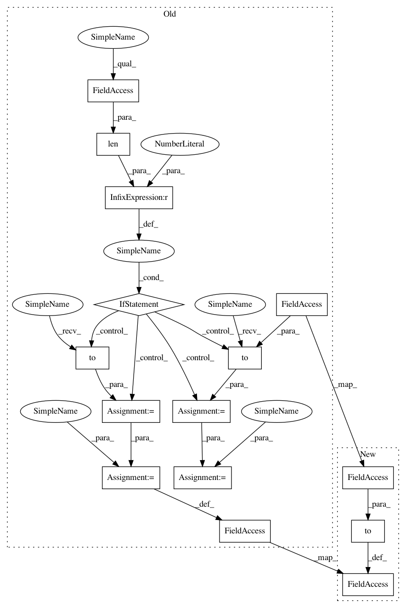

7abbeaa145581496fb43276400aab2ae4387d463,models/pix2pix_model.py,Pix2PixModel,set_input,#Pix2PixModel#,56
Before Change
AtoB = self.opt.which_direction == "AtoB"
real_A = input["A" if AtoB else "B"]
real_B = input["B" if AtoB else "A"]
if len(self.gpu_ids) > 0:
real_A = real_A.to(self.device)
real_B = real_B.to(self.device)
self.real_A = real_A
self.real_B = real_B
self.image_paths = input["A_paths" if AtoB else "B_paths"]
def forward(self):
self.fake_B = self.netG(self.real_A)
After Change
def set_input(self, input):
AtoB = self.opt.which_direction == "AtoB"
self.real_A = input["A" if AtoB else "B"].to(self.device)
self.real_B = input["B" if AtoB else "A"].to(self.device)
self.image_paths = input["A_paths" if AtoB else "B_paths"]
def forward(self):
self.fake_B = self.netG(self.real_A)
In pattern: SUPERPATTERN
Frequency: 4
Non-data size: 15
Instances
Project Name: junyanz/pytorch-CycleGAN-and-pix2pix
Commit Name: 7abbeaa145581496fb43276400aab2ae4387d463
Time: 2018-05-22
Author: tongzhou.wang.1994@gmail.com
File Name: models/pix2pix_model.py
Class Name: Pix2PixModel
Method Name: set_input
Project Name: junyanz/pytorch-CycleGAN-and-pix2pix
Commit Name: 7abbeaa145581496fb43276400aab2ae4387d463
Time: 2018-05-22
Author: tongzhou.wang.1994@gmail.com
File Name: models/cycle_gan_model.py
Class Name: CycleGANModel
Method Name: set_input
Project Name: junyanz/pytorch-CycleGAN-and-pix2pix
Commit Name: 7abbeaa145581496fb43276400aab2ae4387d463
Time: 2018-05-22
Author: tongzhou.wang.1994@gmail.com
File Name: models/pix2pix_model.py
Class Name: Pix2PixModel
Method Name: set_input